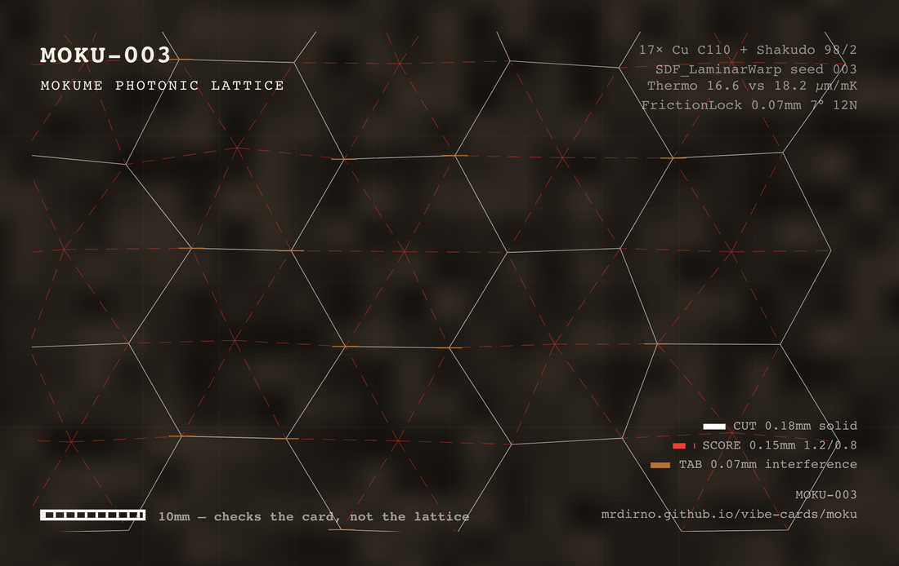

What it is
A lantern. Flat pieces of striped metal, cut full of holes, that slot into each other and stand up into a box about 120 × 90 × 110 mm. Put a light inside and the pattern falls across the room. Nothing is glued and there are no screws — wedge tabs jam into their slots and hold.
The card calls it a Mokume Photonic Lattice, which is three hard words for a striped metal lamp. Mokume-gane means “wood-grain metal”. You stack sheets of two different metals, forge them into one solid block, then cut down into the layers so the stripes surface as a pattern. Photonic here only means it is about light. A lattice is a grid full of gaps.
The two metals are copper and shakudo. Shakudo is a Japanese alloy: 98% copper, 2% gold. Treated, it goes a deep blue-black. That dark stripe against bare copper is the whole look.
The pattern cut into it is kumiko — Japanese latticework put together without nails — in the asanoha or “hemp leaf” pattern, a six-pointed star repeated across a grid. It is one of the oldest patterns in the craft.
- SIZE
- about 120 × 90 × 110 mm assembled
- SHEET
- 0.8 mm thick · cut 1:1, in millimetres
- LAYERS
- 17 · 0.9 mm copper alternating with 0.6 mm shakudo
- SHAKUDO
- 98% copper, 2% gold · patinas blue-black
- CELL
- asanoha hemp leaf · 21 mm across, adjustable 18–24 mm
- EXPANSION
- copper 16.6 · shakudo 18.2, estimated · µm per metre per kelvin
- OPENING
- 0.30 mm at +40 °C — claimed, never measured
- TAB
- 0.07 mm oversize · 7° wedge · no glue
- HOLD
- 12 newtons of shear — calculated, never tested
- LICENCE
- MIT
The lattice opens when it warms
This is the good part, and it is the reason this design exists rather than being a nice lamp with holes in it.
Metals get longer when they get hotter, and different metals get longer at different rates. Every rib in this lattice is copper on one side and shakudo on the other. Warm it up and the two sides no longer match, so the rib changes shape and the hole beside it opens.
A rib — the drawings call it a ligament — is one thin strip of metal between two holes. Six of them ring each cell.
Here is the sum. It uses a strip 150 mm long — a piece running right across a face, not the short bar between two neighbouring holes. Warm it by 40 °C and the copper side gets 0.0996 mm longer. The shakudo side gets 0.1092 mm longer. The difference is 0.0096 mm.
Six times 0.0096 is 0.0576 mm. The design package writes 0.30 mm one line later. Both numbers are in the source and only the small one follows from the rule printed beside it.
Nothing has been built, so no measurement settles it. What is certain is the direction: warm this lattice and it opens a little. How little is an open question, and it is the most useful thing anyone could send back to this page.
How to build it
A METAL SHOP, NOT A KITCHEN TABLE
-
Find the shop first
This step decides whether you can build this at all, so it is first. You need a 20-tonne press, a furnace that holds 450 °C, an etching bath and a laser cutter. A school metal shop, a makerspace or a jeweller has these.
If that list is not available to you, skip to Build it in one metal below. You get the lantern and the locking tabs today. You do not get the opening.
-
Stack 17 layers, alternating
Sheets 120 × 90 mm. Copper 0.9 mm, shakudo 0.6 mm, one then the other, 17 sheets in all. Count them as you go and measure the stack with a ruler — the paperwork and the layer count disagree here, and the ruler wins.
-
Press the stack into one sheet
Cold press it under 20 tonnes until it is 0.8 mm thick. Nothing melts. The layers weld to each other under pressure and become one piece of metal, and the stripes stretch out as it spreads.
-
Anneal it at 450 °C for 22 minutes
Pressing leaves metal hard and brittle. Heating it and letting it cool makes it soft enough to work again. Do this before you cut, not after — a brittle sheet cracks at the thin ribs, which is most of what this sheet is.
-
Etch it to bring the stripes up
Ferric chloride, 30%, about 8 minutes. The two metals dissolve at different speeds, so the layers stop being invisible and become a surface you can see and feel. This is the step that turns a grey sheet into wood grain.
-
Cut the lattice
Laser, on the 0.8 mm sheet. White solid lines are cuts, red dashed lines are scores, copper is a tab. The file already allows 0.08 mm for the width of the beam, so cut it exactly as drawn and do not add an offset of your own.
-
File the wedge on each tab
Every tab is drawn 0.07 mm wider than its slot — about the thickness of a hair — and tapers at 7 degrees. That taper is the whole trick: the tab jams instead of sliding. File to the line and stop.
7° WEDGE The taper is drawn at its true 7 degrees. The 0.07 mm of extra width is not drawn at all: at this size it would be less than half a pixel.
-
Push the tabs home. No glue.
They are meant to jam. Push each tab until it stops and leave it there. The calculation says one joint holds 12 newtons — about a bag of sugar hanging off it — but that is a calculation, and nobody has pulled one apart to find out.
-
Warm it, and measure
A 200 W halogen lamp 150 mm away raises it about 40 °C. That is the moment this whole design is about. Put a caliper across one cell before and after.
Whatever number you get, put it in the wishing well at the bottom of this page. Nobody has this number. You would be the first person to measure it.
Build it in one metal
You probably do not have a 20-tonne press. You can still build this today, and it is worth saying plainly: the cut file is just a shape. Run it in any 0.8 mm sheet you can actually get hold of — brass, aluminium, even heavy card — and you get a lantern.
The lattice, the hemp-leaf pattern, the light it throws.
The friction lock. The 7° wedge and the 0.07 mm of interference work in any stiff sheet. No glue, no screws, same as the original.
A finished object, in an afternoon, on a laser cutter or with a scalpel.
The opening. That is the one thing that needs two metals. One metal expands evenly, so the rib stays the shape it was and the hole does not change.
The stripes. Those are two metals as well. A single sheet is a single colour.
ONE CAUTION IF YOU USE CARD
Card is soft. The tab will hold, but nothing like 12 newtons, and an interference fit that jams in brass will crush in card. Cut one tab and one slot first, push them together, and adjust before you cut the whole sheet.
Reading the sheet
FOUR MARKS, AND THEY MEAN DIFFERENT THINGS
The swatches are drawn on a dark ground because that is where you will meet them — on the sheet itself, in the sheet’s own white, red and copper.
What is calculated and what is measured
Nobody has measured any of this. Here is exactly where that matters, in order of how much it would change what you get.
Nothing has been built. Nobody has stacked the layers, pressed them, cut a lattice or warmed one up. Every number here comes out of a calculation — the 0.30 mm, the 12 newtons, all of it.
One of the two key numbers is a guess. Copper’s 16.6 comes from the ASM Handbook. Shakudo’s 18.2 comes from nowhere: there is no published figure for it, so it was estimated. The opening depends entirely on the gap between those two.
Two tests read as though they happened. The package’s evals file reports an Instron 68SC slip test with no qualifier at all, and an infrared dilatometry run it marks “simulated” and then calls “measured” twice in the same line. Its own README says neither was performed. The README is the honest one.
Six times 0.0096 is 0.0576, not 0.30. Both numbers sit in the source, a line apart. Only the small one follows from the rule printed beside it, and no measurement exists to decide between them.
The 150 mm in that sum is longer than the lantern. It is about the diagonal across one face. The cells sit 21 mm apart, and the metal between two of them is nowhere near 150 mm long. Which length belongs in the sum is not written down anywhere.
Seventeen layers do not add up to 25.5 mm. At 0.9 and 0.6 mm alternating, seventeen sheets is about 13 mm. 25.5 is what seventeen pairs would be. Measure your own stack rather than trusting either number.
The friction number came from wood. The 12 newtons uses 0.34 for friction, which is a figure for dry wood against metal. Both sides of this joint are metal. It may be close. Nobody has pulled a tab out to find out.
The stripes on the front of the card are drawn, not photographed. A program made that pattern. There is no block of metal anywhere, so there was nothing to photograph. The back of the card is the lattice as the program draws it, which is the nearest thing here to a photograph of the object.
None of this makes the design wrong. It makes it untested, which is a different thing, and the difference is worth a whole section on the page a stranger reads.
Licence
This card is MIT. Do what you like with it, including sell it, as long as the copyright line travels with it. Cards 001 and 002 in this book are CC BY-NC, which forbids selling. This one is not, and that is not an oversight — its author set it to MIT and it was left the way they set it.
MIT also says there is no warranty of any kind. On a design nobody has built, read that line twice.
vc1|MOKU-003|Mokume Photonic Lattice|2026-08|MIT|vibe-cards
The chip carries that line in plaintext, next to the address. It needs no server and no network to say what this card is — so if this page ever dies, the card still knows.
PRINT IT YOURSELF — this card is a template in Card Studio, the same free app that printed the original. It opens holding this card, both faces.
The log
This card’s address can never change, so anything new about it has to land here: corrections, a metal that turned out to work, a tab size that turned out to be wrong. Tap the card again in a month and there should be something on this page that is not on it today.
The first entry this page is waiting for is a number off a caliper.
Want it changed?
Ask for anything. A one-metal version with the tabs already resized, a flat panel instead of a box, a smaller lantern, the cut file in a format your laser cutter likes, a shopping list with sheet sizes on it. Whatever would make it work for you.
No account, no email, nothing to sign up for. Just write and tap. It goes into a queue someone works through, not into an inbox.